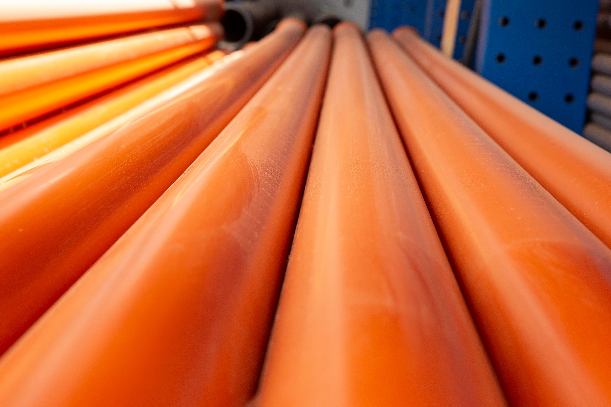

Zdravotní technika
Navrhujeme splaškovou kanalizaci, která zajišťuje bezpečný a efektivní odvod odpadních vod. Systémy navrhujeme tak, aby splňovaly hygienické normy a požadavky na ochranu životního prostředí.

Rozsah projektování
Kontaktujte nás pro nezávaznou konzultaci a návrh optimálního řešení.
Kontaktovat nás